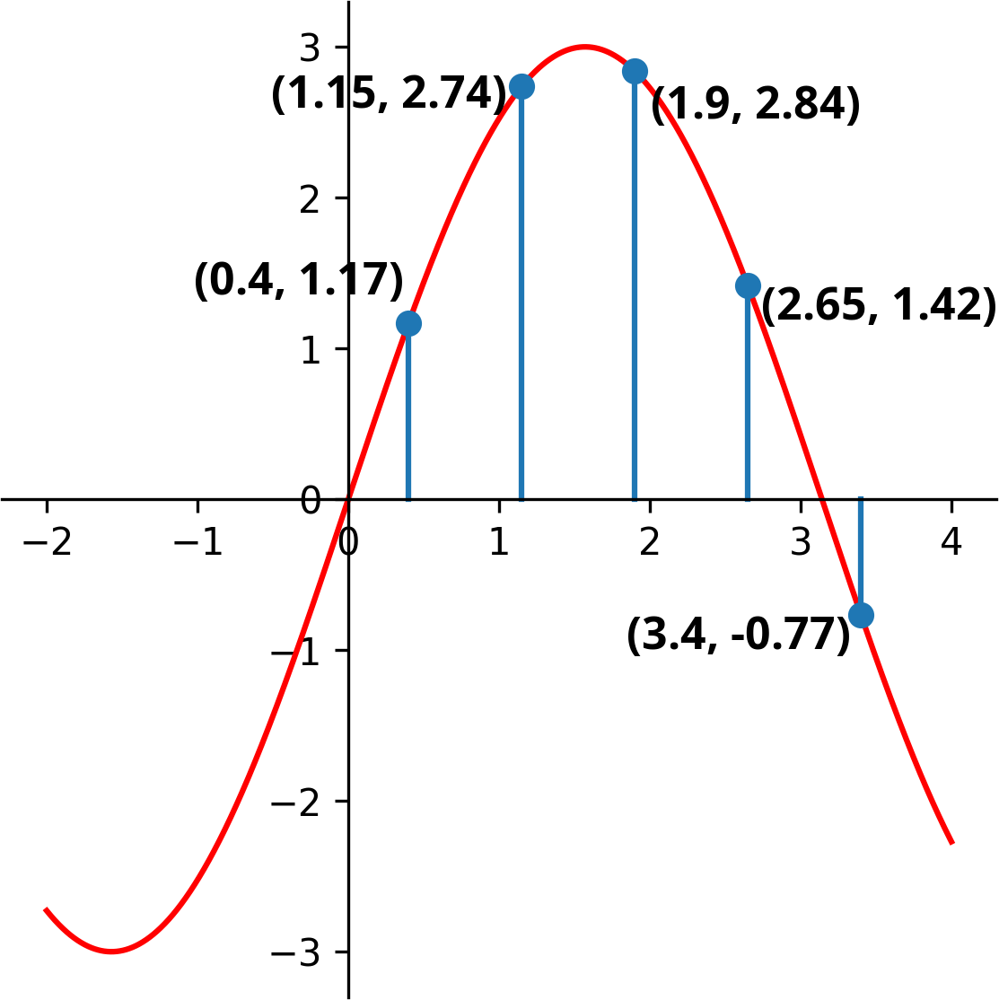
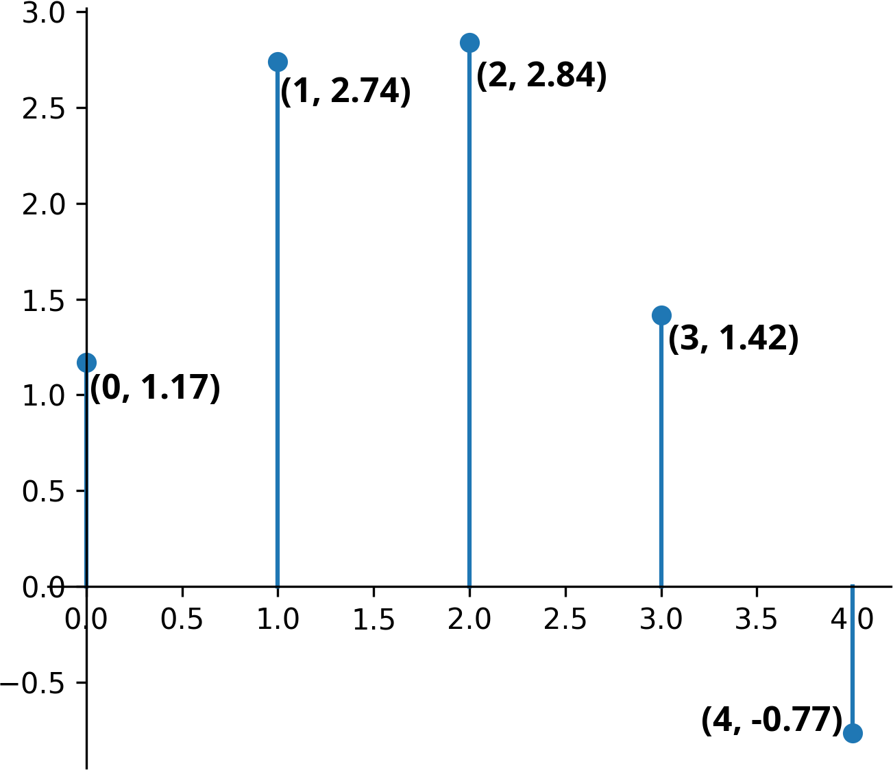
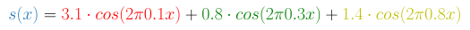
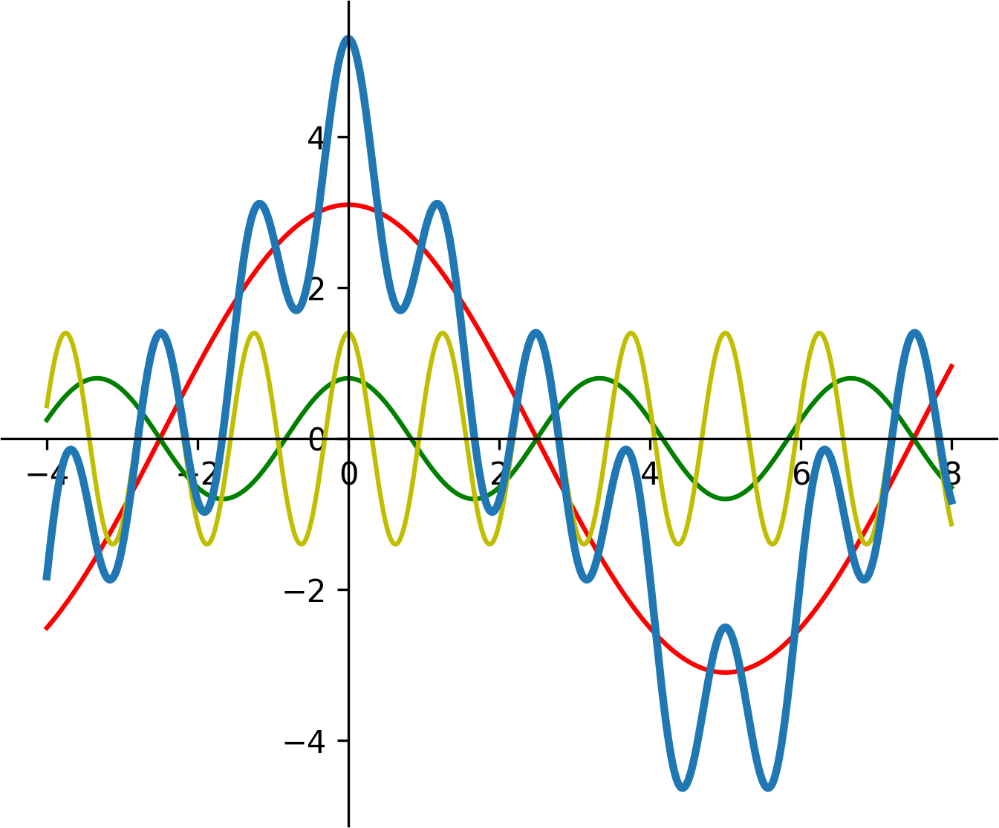
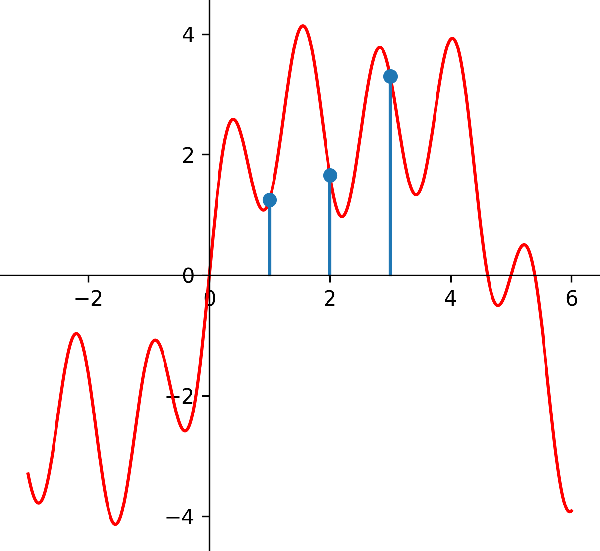
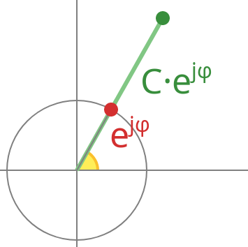
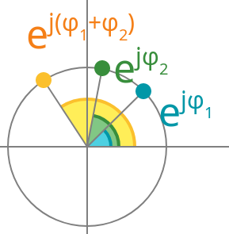
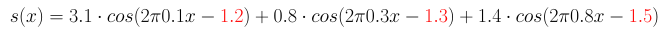
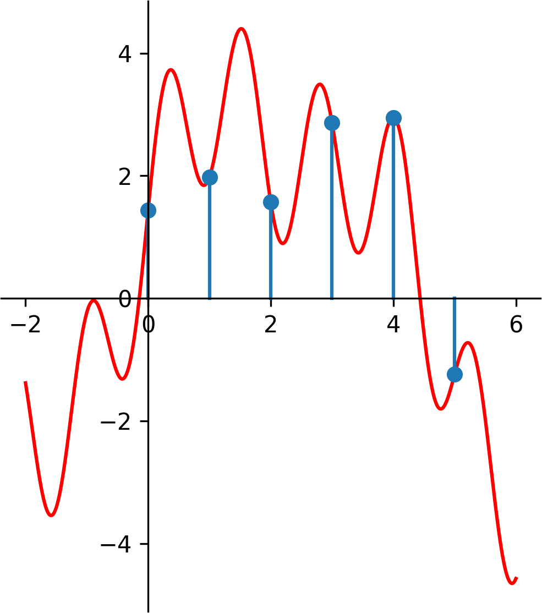

{{ title }}
This writing aims to be an introduction to the Discrete Fourier Transform (DFT) for those without any prior knowledge of regular Fourier series or transforms.
Motivation
The motivation behind Fourier transforms is pretty simple: you want to find out what sinusoidal components your signal has, and retrieve their respective amplitudes and frequencies. This is indeed simple if you have already worked with such stuff, but it raises a lot of questions for a complete beginner. What is a signal? Why do I want to find its frequencies? Why do I use sines and cosines to accomplish this? To make everything clear, let's answer those questions. Or you can skip this part.
Signals are usually divided into four categories by two main characteristics. They can be discrete or continous in time (the domain) and similarly have discrete or continous values (the codomain). For now, making a distinction in the codomain serves no purpose, so we are left with two groups.
In practice you have discrete signals, for example measurements from a sensor with a timestamp and a numeric value. The blue dots mark such a signal with five measurement points. These points can be easily represented programatically by an array with pairs of numbers as items.
[(0.4, 1.17), (1.15, 2.74), (1.9, 2.84), (2.65, 1.42), (3.4, -0.77)]
The red line represents a more abstract signal (3*sin(x) in this case). It is defined for every x, but dealing with concrete values gets harder as the functions composing the signal get more complex. At first glance it may seem that the blue signal samples the red one, as it fits perfectly in those points, but why would that be the case?
It seems abstract functions would serve a purpose in inter- and extrapolating values, if they would be unequivocally expressible. Without diving into the realm of interpolation we can say that there won't be a bijection between discrete and continous signals, but also that the first signal clearly fits our measurements more, where 'clearly' remains an ambigous term for now.
There are also two things worth mentioning about the blue signal:
- The time scale is completely arbitrary. There is no real meaning behind t=0, so we can shift the whole signal left by 0.4. When we are dealing with only one signal, there is no reason not fix its start point at zero time as leaving the offset at 0.4 would only make our calculations more complicated.
- Samples are taken periodically at a fixed rate. That might not always be the case, but still is most of the time so using this simplification should be fine for now. As said above, the time scale is arbitrary, so we can rescale the whole signal to have its samples taken at positive (and zero) integer time values. Of course you are probably dealing with physical quantities, so the time scale is important and should not be completely discarded, but more on that later.
So, our signal looks like this now:
Also the array form is trivialized even more, no need to store indices anymore:
[1.17, 2.74, 2.84, 1.42, -0.77]
And lastly, Why do I use sines and cosines? First, they are periodic functions. You might say a square wave is periodic as well and way easier to make calculations with. But these signals are often pushed through integration and derivation steps, and it is rare to find such function that can survive these methods without minor alterations. Sine derives into cosine, and vica versa with a factor of -1, thus making repeated derivation return the original function after four steps. Exponential and hyperbolic functions also have this property (and are closely related), but they are not periodic in the real domain. A flat constant zero function satisfies both properties, but is completely uninteresting.
Synthesis and analysis
The thought line of the following section (and some code examples) was largely based on ThinkDSP (chapter 6 and 7), but with some alterations, whenever I felt more clarification is needed.
Our building blocks are cosine signals, which have a frequency (f) and an amplitude (A) as parameters (and a phase which we conviniently ignore for now).
{{ formula("simple_cosine.tex", 32) }}The 2 * π * f part is often abbreviated as ω (greek small omega), but we'll stick with the 2πf notation.
We can build more complex signals by summing some of these cosines (with different frequencies and amplitudes).
{{ formula("sum_cosine.tex", 20) }}As the example shows, even the sum of three cosines can result in complex-looking functions:
 Instead of preceiving this signal as a sum, we can treat it as an inner product of two vectors, one being the amplitudes, and the other the cosine terms.
{{ formula("synthesis_vectors.tex", 28) }}What do we gain from that? Nothing, as long as we are plugging our x-es to this function one by one. But generally, if this signal is a generator, we are going to take more than one sample. With multiple x-es and frequencies the cosine vector expands into a matrix and now we have a matrix-vector multiplication.
{{ formula("synthesis_matrix.tex", 24) }}Maybe it is more clear with a different notation (hover on result elements to see the inner products):
This step is called synthesis where the result signal is built from our base components. The reverse of this is analysis where we know the frequencies and the result signal (the samples in our case) and the variables under question are the amplitudes. If you are familiar with Gaussian elimination, you already know the next step, if not, read it up. Basically we have three equatations for three unknown variables (A1, A2, A3). The cosine terms might look scary, but since all of their variables are constant, the terms themselves will be constant as well. We can sample a continous signal as many times as we want, but it is easy to see that we need at least as many samples as many frequencies we have; and that further samples add no information to our system of equatations.
Well, the above sentence is not entirely true, there are edge cases, where even though we have three equatations, the system won't be solvable. If a column is full of zeroes, or two columns are equal, our solution will be ambigous. This translates nicely into the world of signals, if two our frequencies sync with the sampling frequency, they are going to measure the same value each time. With a sampling rate of 1 and two integer frequencies, we will never find a solution. Also a full zero column tells us nothing about the amplitude, as seen below:
Instead of solving a linear system of equatations each time, we can get the same result by taking the inverse of this cosine matrix. The edge cases discussed above correspond to the determinant being zero, thus the inverse of the matrix not existing, but otherwise this is the way to go. To be honest, this is the most important concept in this whole article, and if you can understand the Gaussian elimination or the inverse method, you understood DFT as well, as from now, only the details of this matrix and the inverse calculation methods will change.
You can verify this with a few lines of code. A python example below using the values seen before:
{{ code("analysis_example.py") }}But hey! - you might ask - how do I find the frequencies as well? It is sure nice to be able to calculate the amplitudes, if I already know what frequencies my signal has, but that's not the case! Yes, but before we make a choice on the frequencies to test for, there is another, even more serious problem.
In the beginning of this section I made the not explained decision of solely using cosines as our building blocks instead of sines or both. What happens if we try to approximate a sum of sines by cosines? Let's modify our last example slightly:
{{ formula("sum_sine_concrete.tex", 20) }}There is no reason to sample the resulting signal at zero time, as it will always be zero there. Don't worry, in that case we'll just take our samples at t = {1, 2, 3}.
This results in S = [1.25, 1.66, 3.30] {{ code("analysis_sine_pt1.py", "python") }}
And now doing the analysis with cosines
{{ code("analysis_sine_pt2.py", "python") }}What we get back from this is A_calc = [3.64, 2.41, -3.06]. Not even close.
Exponentials
The first naïve idea would be: Well, why don't we use both? Naïve ideas are not necessarily bad ideas, so let's see how this turns out. Our building blocks are now sums of sine and cosine functions.
{{ formula("expo_sin_cos_1.tex", 24) }}We can normalize A and B, by dividing them with the square root of the sum of the two terms squared
{{ formula("expo_sin_cos_2.tex", 24, amsmath=False) }}Let's use C as a shorthand for {{ formula("expo_sin_cos_3.tex", 18, inline=True, amsmath=False) }}, and since the sum of A/C and B/C squared is 1 now, we can find a φ (greek phi) such as
{{ formula("expo_sin_cos_4.tex", 24, amsmath=False) }} {{ formula("expo_sin_cos_5.tex", 24, amsmath=False) }}Dividing the second equatation with the first, the Cs cancel out and we are left with a nicer formula
{{ formula("expo_sin_cos_6.tex", 24, amsmath=False) }}And now we can get the value of φ by plugging B/A into the inverse of tangent (also don't forget to check if A is zero). Our signal looks like this now:
{{ formula("expo_sin_cos_7.tex", 24) }}
Multiplied by C what we have right now is an identity, namely the cosine of the difference of two angles.
{{ formula("expo_sin_cos_8.tex", 24) }}We could do some rearrangement since cosine is an even function. Also we have shown (not rigorously) that with just a sine and a cosine, we are able to express any sinusoid shifted with a phase φ. There are also more intuitive ways to reach this conclusion. Cosine is an even function, and even functions can be used to analyse even signals, and the same can be said for sine, except it is odd and is useful for odd signals. And since you can divide any signal into even and odd sections, you can analyse both parts by using only sines or cosines.
For me, the geometrical view was the most intuitive. We can treat sine and cosine as projections of a simple, two-dimensional circular rotation.
We can represent this system, the red dot with a single parameter, namely the angle, and than define a function rot, that accepts a number, and spits out its cosine and sine as a pair.
{{ formula("exp_rot.tex", 24) }}If you are familiar with complex numbers, the exponential form does the same and probably makes more sense to you than my arbitrarily defined function. Otherwise you are probably wondering where the hell did e and j come from, but don't worry about them; substitute rot() in your head. Furthermore, you might have seen this formula but with i instead of j, it is just a matter of notation which symbol to use.
{{ formula("exp_form.tex", 24) }}Using complex numbers has a few advantages:
- Multiplying a complex number with a real number scales the complex number, but keeps the angle. 
- Multiplying two rotations (complex number with length one) yields a third one with its angle being the sum of of the two original angles due to the exponential identities. 
Usually when multiplying two complex numbers, scaling and rotation both take place.
But how all of this helps us in practice? Well, take a step back. We have shown that from a sine and cosine pair we can handle all kinds of phases. The reverse is also true: for any phase, a sine and cosine pair is sufficient. This increases the width of our matrix M by twice, and to keep our system of equatations solvable, we'll need to take twice as many samples now. Remember, for each frequency component, we have now two unknowns to solve: the sine and cosine, or in other terms, the amplitude and the angle.
Add a few phases to our last example:
With six sample points from 0 to 5 our signal looks like this:
